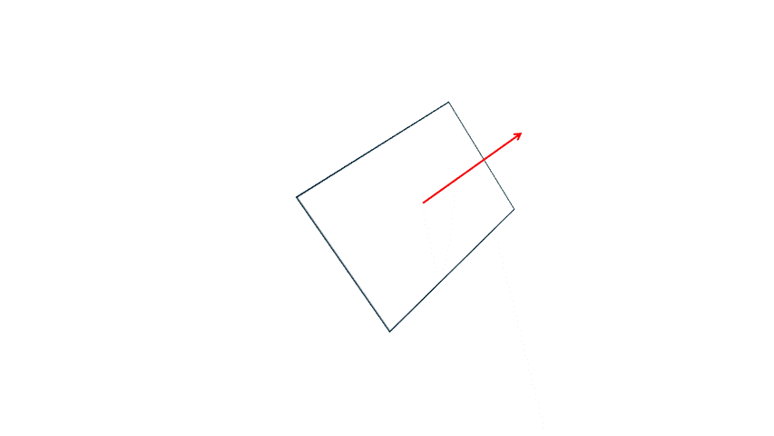

Lighting
Tầm này thì chắc bạn cũng hình dung được cách thêm lại lighting vào engine. Ta chỉ cần đưa pháp tuyến và các tham số cần thiết vào cho shader là ô kê, tuy nhiên sẽ có 1 vấn đề "nho nhỏ".1. Directional light
Ta thêm lại class DirectionalLight (chưa có shadow), các biến global và các HTML element liên quan tới directional light vào:a. Đưa pháp tuyến vào GPU
Về pháp tuyến của mỗi tam giác, thay vì tính lại bằng tích có hướng thế giới mỗi frame (series cũ ta có hàmgetWorldNormal).
Thì ta sẽ tính ngay pháp tuyến cho mọi
tam giác ngay từ Mesh (object space), lưu nó cho từng đỉnh, và gửi nó vào vertex shader chung với mấy dữ liệu khác.Trước tiên là thêm một biến
normal cho tam giác, và hàm để cập nhật nó:
class Triangle {
constructor(vertices = [], uv = [], color = new Color(255, 255, 255)) {
this.vertices = vertices;
this.uv = uv;
this.color = color;
this.normal = Vector3.forward.clone(); // <----------------------------
this.updateNormal(); // <----------------------------
}
updateNormal() {
let edge1 = Vector3.sub(this.vertices[0], this.vertices[1]);
let edge2 = Vector3.sub(this.vertices[1], this.vertices[2]);
this.normal = Vector3.cross(edge1, edge2).normalize();
}
}normal này của Triangle sẽ được dùng chung cho cả 3 đỉnh. Đỉnh bây giờ có khá nhiều dữ liệu rồi (tọa độ, UV, pháp tuyến),
đáng lẽ có thể gom lại thành 1 class Vertex riêng, nhưng trong series này mình vẫn giữ cách lưu theo tam giác cho đơn giản.Một cái bạn nên biết là các đỉnh ở cùng 1 tọa độ, sẽ có pháp tuyến khác nhau, vì nó thuộc tam giác khác nhau. Vì vậy dù có dùng Index buffer, ta cũng không gộp được mấy đỉnh này lại thành 1 (ví dụ 1 góc của khối lập phương thuộc 3 mặt, nên vẫn phải là 3 đỉnh), vì đỉnh của tam giác khác nhau thì dữ liệu khác nhau, cho dù chúng có chung tọa độ.
Vì đỉnh đã có dữ liệu normal rồi nên vertex shader cũng nhận vào 1 attribute
aNormal. Vì attribute này là ở object space,
nên trong vertex shader nó cũng phải nhân với model matrix như tọa độ. Tuy nhiên khi nhân với model matrix, thay vì để w = 1
như tọa độ, thì ta để w = 0. Để mình giải thích.Mục đích của việc set
w = 1 là để khi nhân ma trận ta có thể thực hiện phép cộng với cột thứ tư của ma trận, trick
này ta có xài với translation matrix:
$$
\begin{pmatrix}
1 & 0 & 0 & t_{x}\\
0 & 1 & 0 & t_{y}\\
0 & 0 & 1 & t_{z}\\
0 & 0 & 0 & 1
\end{pmatrix}
$$
Vì pháp tuyến là một vector, nó không có tọa độ, cho nên ta phải bỏ đi translation matrix, bằng cách bỏ đi việc cộng cột 4 => set w = 0.Như vậy vertex shader sẽ như sau:
...
in vec3 aNormal; // <---------------------
...
out vec3 vWorldNormal; // <---------------------
void main(){
gl_Position = uProjection * uView * uModel * vec4(aPosition, 1.0);
vUV = aUV;
vWorldNormal = normalize((uModel * vec4(aNormal, 0.0)).xyz); // hàm normalize để chuẩn hóa pháp tuyến về vector đơn vị
}Như vậy ở hàm
Mesh.uploadToGPU ta phải thêm 3 float của normal vào trong dữ liệu đỉnh. Mỗi vertex bây giờ có 8 float (32 byte): 3 cho position,
2 cho UV và 3 cho normal. Vì vậy stride là 32 byte; offset của UV vẫn là 12 byte, còn normal là 20 byte. Mỗi tam giác thì có 24 float:
class Mesh {
...
uploadToGPU() {
if (this.tris.length == 0) return;
const vertexData = new Float32Array(this.tris.length * 24);
for (let i = 0; i < this.tris.length; i++) {
for (let j = 0; j < 3; j++) {
const vertex = this.tris[i].vertices[j];
vertexData[i * 24 + j * 8] = vertex.x;
vertexData[i * 24 + j * 8 + 1] = vertex.y;
vertexData[i * 24 + j * 8 + 2] = vertex.z;
vertexData[i * 24 + j * 8 + 3] = this.tris[i].uv[j].u;
vertexData[i * 24 + j * 8 + 4] = this.tris[i].uv[j].v;
vertexData[i * 24 + j * 8 + 5] = this.tris[i].normal.x;
vertexData[i * 24 + j * 8 + 6] = this.tris[i].normal.y;
vertexData[i * 24 + j * 8 + 7] = this.tris[i].normal.z;
}
}
...
gl.vertexAttribPointer(aPosition, 3, gl.FLOAT, false, 32, 0);
gl.enableVertexAttribArray(aUV);
gl.vertexAttribPointer(aUV, 2, gl.FLOAT, false, 32, 12);
gl.enableVertexAttribArray(aNormal);
gl.vertexAttribPointer(aNormal, 3, gl.FLOAT, false, 32, 20);
...
}
}const aNormal = gl.getAttribLocation(program, "aNormal");b. Tính directional light
Directional light cần 2 thứ để tính: hướng và cường độ, như vậy ta chỉ cần truyền thêm chúng vào:const uDirLightDir = gl.getUniformLocation(program, "uDirLightDir");
const uDirLightIntensity = gl.getUniformLocation(program, "uDirLightIntensity");draw của từng
GameObject, mình truyền nó 1 lần mỗi frame trong hàm render, trước khi vẽ:
function render() {
...
gl.uniform3f(uDirLightDir, dirLight.dir.x, dirLight.dir.y, dirLight.dir.z);
gl.uniform1f(uDirLightIntensity, dirLight.intensity);
ground.drawWithChildren();
...
}dirLight.dir.normalize() để chắc chắn nó luôn là
vector đơn vị, vì công thức bên dưới dùng tích vô hướng.Cuối cùng, phần tính ánh sáng sẽ nằm ở fragment shader. Đây là dòng tính diffuse của directional light trong series trước:
const dirLightDiffuse = (1 - (Vector3.dot(triWorldNormal, dirLight.dir) + 1) / 2) * dirLight.intensity;...
uniform vec3 uDirLightDir; // <---------------------
uniform float uDirLightIntensity; // <---------------------
in vec2 vUV;
in vec3 vWorldNormal; // <---------------------
out vec4 outColor;
void main(){
vec3 color = uUseTexture ? texture(uTexture, vUV).rgb : uColor;
float dirLightDiffuse = (1.0 - (dot(vWorldNormal, uDirLightDir) + 1.0) / 2.0) * uDirLightIntensity; // <---------------------
outColor = vec4(color * dirLightDiffuse, 1.0); // <---------------------
}c. Lỗi khi object có mặt xiên không được scale đồng đều
Nghe tiêu đề thì có vẻ phức tạp, nên mình sẽ cho bạn xem một demo để hiểu vấn đề. Demo dưới đây có tòa tháp được xoay 45 độ, kéo giãn 5 lần theo chiều x. Mình cho camera ngay bên trong tòa tháp nhìn vào mấy thanh xéo xéo, làm directional light sáng nhất, ngừng xoay và chiếu theo hướng (-1, 0, 0) (xem diff): Thoạt nhìn thì không có gì đặc biệt, tuy nhiên nếu bạn nhìn kỹ và suy nghĩ lại, nếu directional light chiếu theo hướng (-1, 0, 0) thì đáng lẽ phần trên của mấy thanh này nó phải sáng hơn nữa, điều này nghĩa là pháp tuyến của chúng ta có vấn đề.Như tiêu đề, nguyên nhân điều này xảy ra là do tòa tháp của chúng ta có mặt xiên, và ta đang scale nó không đồng đều (5, 1, 1). Nguyên nhân tại sao thì bạn xem gif dưới đây:

Với một tam giác, gọi \(t\) là một vector bất kỳ nằm trên mặt phẳng tam giác. Gọi \(M\) là model matrix, và \(t'\) là \(t\) sau khi được biến đổi bởi \(M\), nghĩa là: $$ t' = Mt $$ Ta gọi vector pháp tuyến là \(n\), như vậy \(n.t = 0\). Tuy nhiên tích vô hướng cũng có 1 cách biểu diễn khác, đó là xem \(n\) và \(t\) là 2 ma trận 3 dòng 1 cột, thì chuyển vị của ma trận \(n\) nhân với ma trận \(t\) cũng bằng 0: $$ n^T t = ( n_x, n_y, n_z ) \begin{pmatrix} t_x \\ t_y \\ t_z \end{pmatrix} = (n_x * t_x + n_y * t_y + n_z * t_z) = (0) $$ Chuyển vị ma trận đơn giản chỉ là biến dòng thành cột và cột thành dòng, tìm google thêm để xem ví dụ nếu bạn chưa biết
Ta gọi \(n'\) là vector pháp tuyến sau khi biến đổi, ta mong muốn là sau khi biến đổi, thì tích vô hướng \(n'.t'\) vẫn bằng 0, hoặc \(n'^T t' = (0)\).
Gọi ma trận mà ta cần tìm (normal matrix) là \(N\), nghĩa là \(Nn = n'\). Như vậy ta có: $$ n'^T t' = (Nn)^T (Mt) = n^T N^T M t $$ Tính chất của chuyển vị: \((AB)^T = B^T A^T\)
Ta biết \(n^T t = (0)\), tức là nếu \(N^T M = I\) (ma trận đơn vị) thì biểu phương trình trên sẽ đúng. Như vậy: $$ \begin{eqnarray} N^T M = I \\ \Rightarrow N^T = M^{-1} \\ \Rightarrow N = (M^{-1})^T \end{eqnarray} $$ Ta đã tìm được normal matrix \(N\) 😳 Nó chính là chuyển vị của nghịch đảo của model matrix \(M\) (bạn cũng tìm google thêm nếu muốn tìm hiểu nghịch đảo ma trận). Nhưng mà thật ra chuyển vị trước hay nghịch đảo trước cũng ra cùng kết quả (also google) nên mình sẽ gọi là nghịch đảo chuyển vị cho nó thuận miệng.
Tuy nhiên có 1 vấn đề là engine ta chưa hỗ trợ nghịch đảo ma trận và chuyển vị ma trận, thêm hàm vào thì làm nó phức tạp thêm, cho nên ta sẽ tìm thử xem nghịch đảo chuyển vị của model matrix sẽ ra gì 😳
Gọi translation matrix là \(T\), rotation matrix là \(R\), scale matrix là \(S\), ta có: $$ \begin{eqnarray} M = TRS \\ \Rightarrow M^{-1} = (TRS)^{-1} = S^{-1} R^{-1} T^{-1} \\ \Rightarrow (M^{-1})^T = ( S^{-1} R^{-1} T^{-1} )^T = (T^{-1})^T (R^{-1})^T (S^{-1})^T \end{eqnarray} $$ Tuy nhiên bạn nhớ là ta có bỏ translation matrix ra ngoài vì pháp tuyến là vector, nên bây giờ: $$ N = (M^{-1})^T = (R^{-1})^T (S^{-1})^T $$ Ta sẽ xử lí từng cái, đầu tiên với scale matrix, nó có dạng: $$ \begin{pmatrix} s_{x} & 0 & 0\\ 0 & s_{y} & 0\\ 0 & 0 & s_{z}\\ \end{pmatrix} $$ Đây là một ma trận chéo. Chuyển vị của một ma trận chéo thì bằng chính nó, còn khi ta nghịch đảo một ma trận chéo thì ta nghịch đảo hết mấy phần tử trong nó, như vậy: $$ (S^{-1})^T = \begin{pmatrix} \frac{1}{s_{x}} & 0 & 0\\ 0 & \frac{1}{s_{y}} & 0\\ 0 & 0 & \frac{1}{s_{z}}\\ \end{pmatrix} $$ Tiếp theo với rotation matrix, nó được tạo thành từ 3 rotation matrix ở 3 trục riêng, mỗi cái có góc riêng của nó. Engine xoay quanh trục x trước, rồi y, rồi z, mà ma trận nằm bên phải được áp dụng trước, nên: $$ R = R_z R_y R_x = \begin{pmatrix} \cos{θ_z} & \sin{θ_z} & 0\\ -\sin{θ_z} & \cos{θ_z} & 0 \\ 0 & 0 & 1 \\ \end{pmatrix} \begin{pmatrix} \cos{θ_y} & 0 & -\sin{θ_y}\\ 0 & 1 & 0 \\ \sin{θ_y} & 0 & \cos{θ_y} \\ \end{pmatrix} \begin{pmatrix} 1 & 0 & 0\\ 0 & \cos{θ_x} & \sin{θ_x} \\ 0 & -\sin{θ_x} & \cos{θ_x} \\ \end{pmatrix} $$ Tìm nghịch đảo chuyển vị của 3 ma trận trên có lẽ hơi khổ, hên cho ta là các rotation matrix là các ma trận trực giao (orthogonal matrix). Ma trận trực giao là ma trận mà các vector cột đều có độ dài 1 và vuông góc với nhau từng đôi một (các vector hàng cũng vậy). Mình thử với ma trận xoay theo trục x. Độ dài thì dễ thấy: cột đầu là (1, 0, 0), hai cột còn lại có độ dài \(\sqrt{\cos^2{θ_x} + \sin^2{θ_x}} = 1\). Còn vuông góc thì: $$ \begin{pmatrix} 1\\ 0\\ 0 \end{pmatrix} . \begin{pmatrix} 0\\ \cos{θ_x}\\ -\sin{θ_x} \end{pmatrix} = 0 $$ $$ \begin{pmatrix} 1\\ 0\\ 0 \end{pmatrix} . \begin{pmatrix} 0\\ \sin{θ_x}\\ \cos{θ_x} \end{pmatrix} = 0 $$ $$ \begin{pmatrix} 0\\ \cos{θ_x}\\ -\sin{θ_x} \end{pmatrix} . \begin{pmatrix} 0\\ \sin{θ_x}\\ \cos{θ_x} \end{pmatrix} = 0 $$ Như vậy nó đúng là một ma trận trực giao. Ma trận trực giao thì có 1 tính chất khá hay, đó chính là nghịch đảo của ma trận cũng chính là chuyển vị của ma trận (tìm google nếu bạn muốn xem chứng minh) 😳 Tức là ta có: $$ (R^{-1})^T = (R_x^{-1} R_y^{-1} R_z^{-1})^T = (R_z^{-1})^T (R_y^{-1})^T (R_x^{-1})^T = (R_z^T)^T (R_y^T)^T (R_x^T)^T = R_z R_y R_x = R $$ Như vậy nghịch đảo chuyển vị của rotation matrix bằng chính nó 😳
Như vậy, normal matrix có dạng: $$ N = R * \begin{pmatrix} \frac{1}{s_{x}} & 0 & 0\\ 0 & \frac{1}{s_{y}} & 0\\ 0 & 0 & \frac{1}{s_{z}}\\ \end{pmatrix} $$ Nhìn thì cũng có lí, object càng dẹt ra thì normal phải càng thẳng đứng.
Math time đã hết, bây giờ ta sẽ implement normal matrix vào engine. Đầu tiên là hàm tính nó, để trong class
Transform:
class Transform {
...
getNormalMatrix() {
let scale = this.lossyScale;
return Mat4x4.Multiply(
Mat4x4.Rotation(this.rotation),
Mat4x4.Scale(1 / scale.x, 1 / scale.y, 1 / scale.z),
);
}
...
}...
uniform mat4 uNormalMatrix;
...
void main(){
...
vWorldNormal = normalize((uNormalMatrix * vec4(aNormal, 0.0)).xyz);
}const uNormalMatrix = gl.getUniformLocation(program, "uNormalMatrix");class GameObject {
...
draw() {
...
gl.uniformMatrix4fv(uNormalMatrix, false, this.transform.getNormalMatrix().toColumnMajor());
...
}
...
}Có lẽ bạn đang thắc mắc tại sao bên Software Rasterizer không gặp vấn đề này. Đó là vì ở software rasterizer, ta tính lại pháp tuyến mỗi frame sau khi đã có world space. Còn bên đây ta tính pháp tuyến từ object space, và cố chuyển nó qua world space.
2. Point light
Trước khi làm gì liên quan tới point light, mình reset lại các thứ về lại ban đầu, và đồng thời thêm lại các HTML elements liên quan (Xem diff): Thật ra làm point light cũng không còn gì phức tạp, ta chỉ cần truyền cho shader các thứ cần thiết, rồi cho nó tính theo công thức cũ thôi. Các thứ cần thiết đó là: tọa độ thế giới, vị trí các point light, độ sáng point light và range, ngoài ra ta truyền vào ambient light để tính luôn. Ambient light bên series trước mình để 0.2, ở đây mình giảm xuống 0.1 cho chỗ tối nhìn tối hơn một chút.Cái duy nhất cần để ý là vị trí các point light là một mảng, khi truyền vào ta sẽ dùng hàm
gl.uniform3fv và trong shader
cũng phải cho nó nhận vào 1 mảng, như sau:
uniform vec3 uPointLightPositions[16];#version 300 es
precision highp float;
uniform sampler2D uTexture;
uniform bool uUseTexture;
uniform vec3 uColor;
uniform vec3 uDirLightDir;
uniform float uDirLightIntensity;
uniform float uAmbientLight; // <---------------------
uniform vec3 uPointLightPositions[16]; // <---------------------
uniform int uPointLightCount; // <---------------------
uniform float uPointLightIntensity; // <---------------------
uniform float uPointLightRange; // <---------------------
in vec2 vUV;
in vec3 vWorldNormal;
in vec3 vWorldPosition; // <---------------------
out vec4 outColor;
void main(){
vec3 color = uUseTexture ? texture(uTexture, vUV).rgb : uColor;
float dirLightDiffuse = (1.0 - (dot(vWorldNormal, uDirLightDir) + 1.0) / 2.0) * uDirLightIntensity;
// ------------------ mới ------------------
float pointLightRangeSquare = uPointLightRange * uPointLightRange;
float totalPointLightDiffuse = 0.0;
for (int i = 0; i < uPointLightCount; i++) {
vec3 pointLightVec = uPointLightPositions[i] - vWorldPosition;
if (dot(vWorldNormal, pointLightVec) <= 0.0) continue; // check đèn nằm sau tam giác
float distanceFromPixelToPointLight2 = dot(pointLightVec, pointLightVec);
if (distanceFromPixelToPointLight2 >= pointLightRangeSquare) continue;
float distance = sqrt(distanceFromPixelToPointLight2);
float dotValue = dot(vWorldNormal, pointLightVec) / distance;
float currentPointLightDiffuse = (1.0 + dotValue) / 2.0;
float pointLightDistanceRatio = distanceFromPixelToPointLight2 / pointLightRangeSquare;
float inverseSquareDistance = 1.0 / (1.0 + 0.02 * distanceFromPixelToPointLight2);
float attenuation = (1.0 - pointLightDistanceRatio) * inverseSquareDistance;
totalPointLightDiffuse += currentPointLightDiffuse * attenuation;
}
totalPointLightDiffuse *= uPointLightIntensity;
float lightIntensity = max(uAmbientLight, dirLightDiffuse + totalPointLightDiffuse);
outColor = vec4(min(color * lightIntensity, vec3(1.0)), 1.0);
}let totalPointLightDiffuse = 0;
for (let i = 0; i < activeLightCount; i++) {
const lightPos = activeLights[i];
const pointLightVecX = lightPos.x - pixelWorldX;
const pointLightVecY = lightPos.y - pixelWorldY;
const pointLightVecZ = lightPos.z - pixelWorldZ;
const distanceFromPixelToPointLight2 =
pointLightVecX * pointLightVecX + pointLightVecY * pointLightVecY + pointLightVecZ * pointLightVecZ;
if (distanceFromPixelToPointLight2 >= pointLightRangeSquare) continue;
const distance = Math.sqrt(distanceFromPixelToPointLight2);
const dot = (worldNormalX * pointLightVecX + worldNormalY * pointLightVecY + worldNormalZ * pointLightVecZ) / distance;
const currentPointLightDiffuse = (1 + dot) / 2;
const pointLightDistanceRatio = distanceFromPixelToPointLight2 / pointLightRangeSquare;
const inverseSquareDistance = 1 / (1 + 0.02 * distanceFromPixelToPointLight2);
const attenuation = (1 - pointLightDistanceRatio) * inverseSquareDistance;
totalPointLightDiffuse += currentPointLightDiffuse * attenuation;
}
totalPointLightDiffuse *= pointLightIntensity;getPointLightsThatCanAffectTri, ngoài ra hàm getPointLightsThatCanAffectTri còn bỏ những point light không với
tới tam giác nữa. Ở bên WebGL ta không làm như vậy, là vì world space đang nằm ở vertex shader, nếu implement cái đó sẽ khá là phức tạp, và
performance thật ra không mang lại bao nhiêu vì mọi thứ đã nằm trên GPU.Ở vertex shader thì ta chỉ truyền tọa độ thế giới cho fragment shader là xong:
...
out vec3 vWorldPosition; // <------------------
out vec3 vWorldNormal;
void main(){
vec4 worldPosition = uModel * vec4(aPosition, 1.0); // bóc worldPosition ra để truyền
gl_Position = uProjection * uView * worldPosition; // sửa lại
vUV = aUV;
vWorldNormal = normalize((uNormalMatrix * vec4(aNormal, 0.0)).xyz);
vWorldPosition = worldPosition.xyz; // <------------------
}const uAmbientLight = gl.getUniformLocation(program, "uAmbientLight");
const uPointLightPositions = gl.getUniformLocation(program, "uPointLightPositions");
const uPointLightCount = gl.getUniformLocation(program, "uPointLightCount");
const uPointLightIntensity = gl.getUniformLocation(program, "uPointLightIntensity");
const uPointLightRange = gl.getUniformLocation(program, "uPointLightRange");render, 1 lần mỗi frame. Số point light tối đa phải khớp với kích thước mảng trong shader:
let maxActiveLights = 16;function render() {
...
const pointLightData = new Float32Array(maxActiveLights * 3);
const pointLightCount = Math.min(pointLights.length, maxActiveLights);
for (let i = 0; i < pointLightCount; i++) {
const lightPos = pointLights[i].transform.position;
pointLightData[i * 3] = lightPos.x;
pointLightData[i * 3 + 1] = lightPos.y;
pointLightData[i * 3 + 2] = lightPos.z;
}
gl.uniform3fv(uPointLightPositions, pointLightData); // dùng gl.uniform3fv để chuyển mảng, mỗi phần tử có 3 float
gl.uniform1i(uPointLightCount, pointLightCount);
gl.uniform1f(uPointLightIntensity, pointLightIntensity);
gl.uniform1f(uPointLightRange, pointLightRange);
gl.uniform1f(uAmbientLight, 0.1);
...
}